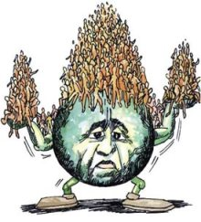
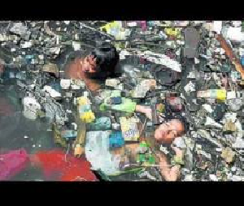

UNIDAD V: El escenario modificado
5.1 Crecimiento demográfico, industrialización, uso de la energía.
 Crecimiento demográfico
En 1978, Thomas Malthus publicó su Ensayo sobre el principio de la población en el que predijo que la población aumentaría con mayor rapidez que la producción de alimentos y que cuando no hubiera suficiente comida para la población acontecería una catástrofe. Poco más de 200 años más tarde, la Cumbre Mundial sobre Alimentación, Cinco años después, realizada del 10 al 13 de junio de 2002, declaro: “El hambre acosa más de 840 millones de personas, les roba fuerza y opaca su inteligencia, destruye vidas inocentes, especialmente a los niños. Y al debilitar la fuerza de trabajo de un país, el hambre impide el desarrollo.” La cifra no solo representa una señal de alarma, sino que denota un problema moral bastante grave.
En este mismo sentido, la Cumbre Mundial sobre Alimentación llevada a cabo del 13 al 17 de noviembre de 1996, en Roma, expresó: “El crecimiento demográfico es la principal razón del aumento de las necesidades alimentarias e intensifica la presión sobre los recursos naturales. Los países con un rápido crecimiento demográfico se enfrentan a dificultades especiales para garantizar la seguridad alimentaria. La consecución de una seguridad alimentaria sostenible está supeditada a la pronta estabilización de la población mundial.” ¿Acaso habrá que darle la razón a Thomas Malthus? A lo largo del siglo XX, la población mundial se ha más que cuadruplicado y sigue aumentando en unos 80 millones cada año, por lo que puede duplicarse de nuevo en pocas décadas. Es preciso por ello valorar el papel de esta explosión demográfica, junto al hiperconsumo de una quinta parte de la humanidad, en la actual situación de auténtica emergencia planetaria, así como reclamar la desaparición de las leyes que criminalizan en muchos países los medios mal llamados “anticonceptivos”. Medios gracias a los cuales las concepciones pueden ser el fruto de decisiones responsables y no la consecuencia indeseada del desconocimiento o de la imposición de fundamentalismos religiosos que exigen asociar sexualidad exclusivamente a procreación.
5.2 Impacto de actividades humanas sobre la naturaleza

Los intercambios de materiales que se llevan a cabo entre los seres humanos con la naturaleza son intercambios desiguales. Mientras que la naturaleza es proveedora de bienes y servicios vírgenes y limpios, el hombre le regresa desperdicios antes, durante y después de que in sistema-producto ha sido entregado a la sociedad. La apropiación intencional del hombre deviene en una función de perdida en cada componente de la naturaleza o de los ecosistemas, en tanto que se impone una función de producción que, por un lado, encubre el mega metabolismo el cual se compone de la circulación, transformación y excreción (Toledo, 2008) de una sociedad humana adicta al consumo y, por el otro, expresa la sobreposición del mundo artificial, sobre el natural.
5.2.1 Contaminación ambiental
Una de las consecuencias que resulta de la intensidad de las actividades humanas es la contaminación ambiental, que deviene como un cambio negativo del estado natural de los factores básicos que conforman el medio ambiente. La contaminación ambiental es un problema multifacético y se presenta en formas muy diversas y con sinergias difíciles de prever. Las señales de la contaminación ambiental se denotan por las consecuencias biológicas de las contaminaciones que derivan efectos ecológicos.
Como contaminación se identifican cuatro tipos básicos: a) biológica (bacterias, hongos, virus, parásitos, introducción de animales y vegetales de otras zonas); b) química (hidrocarburos, detergentes, plásticos, pesticidas, metales pesados, derivados del azufre y del nitrógeno); c) físicas (ruidos, infrasonidos, térmica y radioisótopos), y d) por elementos que dañan la estética de la naturaleza (degradación del paisaje, introducción de industrias, desarrollo de zonas residenciales, autopistas).
5.2.2 Cambio climático global: Causas y consecuencias
.
El calentamiento global es parte del cambio natural de la temperatura de la Tierra; sin embargo, como explica Toharia (2007), este cambio sin duda posee un añadido humano que no es fácil de determinar, aunque se teme que sea cada vez mas determinante.
5.2.3 Deterioro ambiental y disminución de los servicios ambientales.
El deterioro ambiental es otra manera de expresar la degradación de la Tierra. Esto es porque se advierte no solo una alteración en los ecosistemas, sino que se observa una reducción significativa en la tasa de productividad del suelo. La erosión de este, la salinización, la perdida de nutrientes, la descomposición d sus estructuras moleculares (degradación química), la alteración de la cobertura vegetal, la contaminación en sus distintas manifestaciones son formas que adopta la degradación. La metamorfosis de las propiedades naturales del ambiente en un sentido de disminución se interpreta también como una merma de los servicios ambientales.
Dichas alteraciones de deben, sin duda, como dice Ocampo (1999) a “la subvaloración económica de los activos y servicios ambientales, que reflejan una conciencia de abundancia de recursos naturales que ha llevado, en la práctica, a tasas de explotación superiores a las tasas naturales de renovabilidad de dichos recursos. Otra cara de la misma moneda es que los costos ambientales derivados del aprovechamiento de los recursos naturales […] no se han incorporado en los precios de los bienes y servicios producidos. La postergación de acciones preventivas conduce, así, a pérdidas económicas de largo plazo, ya sea en la forma de altos costos de descontaminar o de pérdida irreparable del patrimonio natural”.
5.2.4 Desertificación.
La desertificación es una consecuencia de la intensidad de las actividades humanas, además de la variabilidad meteorológica, que en conjunto rompen el equilibrio del suelo, la vegetación, el aire y el agua. La FAO (1993) define a la desertificación como el conjunto de factores geológicos, climáticos, biológicos y humanos que causan la degradación del potencial físico, químico y biológico de las tierras de las zonas áridas y semiáridas, ponen en peligro la biodiversidad y la supervivencia de las comunidades humanas. El fenómeno avanza a una tasa de cambio tan dinámica que se le mira como una amenaza no solo para la subsistencia de millones de personas, sino también para el medio ambiente y la disponiblidad de alimentos.
Con la misma preocupación, la ONU (2010) afirma que casi un cuarto de la superficie terrestre es ya un desierto y que el porcentaje sigue creciendo. Informa además, que en el plano mundial la desertificación ha alcanzado a 3.6 mil millones de hectáreas. Esta cifra representa 25% de la masa terrestre. La desertificación amenaza la subsistencia de poco más de 1 000 millones de personas en casi 100 países, y causa pérdidas por 42 000 millones de dólares cada año. Frente a este fenómeno que se expande gradualmente cabe preguntar: ¿Cuáles son las herramientas disponibles para combatir la invasión del desierto?
5.2.5 Pérdida de la biodiversidad.
La alteración de los ecosistemas significa la perdida irreversible. La biodiversidad comprende una amplia variedad de organismos vivos que incluyen microorganismos, animales y plantas cuyas interacciones definen a los ecosistemas. La pérdida de la biodiversidad, sin duda, reduce la productividad de los ecosistemas; pero, sobre todo, este desgaste se erige como una amenaza para las condiciones naturales desde donde se producen alimentos, bosques para la obtención de la madera, paisajes que incentiven el esparcimiento, etcétera.
Las Comunidades Europeas, en el documento La economía de los ecosistemas y la biodiversidad, Informa Provisional (2008), explican que la biodiversidad mundial esta amenazada y enfrenta una pérdida de especies entre 100 y 1 000 veces superior al ritmo normal. Los estudios en los que se apoyan calculan que un tercio de las especies evaluadas están amenazadas de extinción y estiman que 60% de los servicios ecosistematicos de la Tierra se han deteriorado en los últimos 50 años. También hacen énfasis en que son las actividades humanas las que causan está perdida, mediante el cambio en el uso del suelo, la explotación excesiva, las practicas insostenibles, la contaminación y la introducción de especies invasoras, que propician la destrucción de hábitats y especies, su fragmentación y deterioro. ¿Podría haber mayor desastre?
5.2.6 Especies exóticas.
Las especies exóticas son todas las plantas no nativas o de animales que han sido introducidos en áreas donde no se producen naturalmente. La mayoría de estas especies llegan ya sea deliberada o accidentalmente por acciones humanas.
La introducción de especies exóticas puede tener graves efectos en el funcionamiento en la biodiversidad de un ecosistema en particular. Esto se debe a que los ecosistemas se desarrollan durante miles de años y las plantas y animales que habitan estos ecosistemas se interconectan. Plantas y poblaciones de animales se mantienen bajo control por los depredadores naturales, asegurando que la superpoblación de una especie no pone en peligro todo el ecosistema. En general, hay recursos suficientes para todos y con el tiempo el ecosistema alcanza un nivel de equilibrio relativo.
Sin embargo, cuando una especie exótica se introduce en un hábitat, se pueden poner en peligro las funciones básicas de todo el ecosistema. Esto puede ser especialmente problemático si las especies introducidas no tienen competidores (o presa) en su nuevo ecosistema. Algunos otros impactos ecológicos de la introducción de especies exóticas son las siguientes:
5.3 Escenario socio-económico.
El escenario socioeconómico alude a la representación de las interacciones hombre-medio geográfico-economía que implica, históricamente, diferentes configuraciones espaciales, de tal modo que cada comunidad crea su ambiente. Distintas estrategias de desarrollo socioeconómico conducen a modelos diferentes de organización y apropiación del contenido del territorio. En este sentido puede asumirse que una combinación territorial dada impone condicionantes a las relaciones económicas y sociales de una comunidad que sobre ella puedan establecerse, de acuerdo con potenciales de orden ecológico, productivo y cultural.
5.3.1 El Estado como regulador del desarrollo.
No es nuevo hacer consideraciones respecto del estado como regulador del sistema económico y, como consecuencia, del desarrollo. La historia económica describe a detalle desde la antigua Grecia hasta la Segunda Guerra Mundial los motivos, formas y adjetivos que adopta el intervencionismo del Estado. La gran depresión de 1929 y las funestas consecuencias de la Segunda Guerra Mundial son dos momentos que justifican la intervención estatal. Asimismo, en esa etapa surgió el concepto desarrollo.
Esta noción aparece en el capítulo I, “Propósitos y principios”, articulo 1, y en el capítulo IX, “Cooperación internacional económica y social”, artículo 55 de la Carta de las Naciones Unidas. No obstante, la exclusividad de su definición ocurrio el 20 de enero de 1949, el dia en que Harry S. Truman tomo posesión como presidente de Estado Unidos. En ese momento se abrió una era para el mundo –del desarrollo- caracterizada por la intervención del Estado. En esa fecha se dio la acuñación política de la palabra desarrollo (Esteva, 1996).
5.3.2 Migración humana.
Desde el surgimiento del humano moderno, hace 100 000 o 200 000 años, los desplazamientos de la especie eran cotidianos (Stringer, 2000). La migración humana ha transformado el mundo.El termino migración humana es un concepto indeterminado y dual. Por un lado, ocurre la emigración, que se entiende como la salida y desplazamiento de personas de un lugar a otro; por el otro sobreviene la inmigración, que se le mira como la llegada de las personas a un lugar. En uno y otro caso, tanto como la salida como la llegada de personas se observan en términos de países.Del mismo modo, este desplazamiento de personas ocurre del campo a la ciudad. La migración humana actual es motivada por las convulsiones políticas, crisis económicas y carencias ambientales.
5.3.3 Analfabetismo.
El analfabetismo es la cualidad de analfabeto. Es alusivo a los individuos que no saben leer ni escribir, que son ignorantes o que carecen de instrucción elemental en alguna disciplina. El analfabetismo es una falla del sistema educativo. Es un crimen para la libertad y la democracia. La crisis de la educación se manifiesta en los tres niveles de analfabetismo: el analfabetismo funcional, el analfabetismo cultural y el analfabetismo moral. Estas diferencias se entienden como una de las expresiones más espinosas de in proceso de exclusión y marginación social.
El II Conteo de Población y Vivienda 2005 mostro que siete de cada 100 hombres y 10 de cada 100 mujeres de 15 años y mas no saben leer ni escribir (INEGI, 2005). Las cifras, aunque parecieran relativamente bajas, son evidencias de la presencia no solo de las desigualdades, sino del avance de la fragmentación social que aún existe en México. Los datos representan un reto para el Decenio de la Alfabetización decretado por la ONU el 18 de enero de 2002, así como para la formulación de las estrategias de la sustentabilidad. El Decenio comenzó el 1 de enero de 2003 bajo la premisa de que la alfabetización va más allá de los tradicionales valores de lectura, escritura y aritmética. La década abarca todo tipo de aprendizaje necesario para que las personas puedan desempeñar con confianza sus funciones en su propio entorno. Pero, sobre todo, denota el riesgo de una creciente polarización social y educacional que se ha vuelto más pronunciado. Esto es, mientras que apenas una pequeña parte de la población mundial tiene acceso a los desarrollos y usos más sofisticados de la alfabetización, como es el uso de correo electrónico e internet para la comunicación diaria, la mayoría de la población apenas tiene acceso a formas y niveles elementales de alfabetización o ni siquiera tiene acceso a ellas (UN, 2000).
5.3.4 Inseguridad alimentaria, social, política, jurídica, económica.
La Cumbre Mundial sobre Alimentación, llevada a cabo en Roma del 13 al 17 de noviembre de 1996, por un lado considerada “intolerable que más de 800 millones de personas de todo el mundo, y en particular de los países en desarrollo, no dispongan de alimentos suficientes para satisfacer sus necesidades nutricionales básicas. Esta situación es inaceptable”. Más adelante, en esta misma declaración se afirma como la pobreza, los conflictos políticos, el terrorismo, la corrupción y la degradación del medio ambiente constituyen una causa importante de la inseguridad alimentaria. La pérdida de certezas para disponer del alimento diario es una forma particular de inseguridad social.
Este concepto se asocia, además, a la perdida de protección y derechos y ala exposición a un mayor riesgo por el desamparo. Si la seguridad jurídica es el derecho de una minoría, la de los pudientes, entonces la inseguridad jurídica seria para las mayorías, para el hombre medio, para quien el derecho sería tan solo simples artilugios defensivos u ofensivos. En la manera de aplicar el derecho, mucho tiene que ver el aparato judicial encargado de hacer cumplir las leyes, es decir, el Poder Judicial. Este poder involucra el sistema democrático y, de suyo, el funcionamiento del sistema político y las formas de hacer política. La imposición de éstas lleva a la inseguridad política.
5.3.5 Acceso a servicios públicos.
La ortodoxia del Consenso de Washington es la antítesis de las demandas sociales. Las reformas sugeridas por este Consenso propusieron un modelo económico en el que el Estado ya no garantizaba protección a la gente frente a los sucesos del mercado. Es decir, a los ciudadanos se les deja sin la protección institucional, de manera que es el suministrador de muchos de los bienes públicos más esenciales. Esto significa, como dice Paramio (2003), que los “bienes públicos que antes proporcionaba el Estado de forma gratuita o a precios fuertemente subsidiados ahora solo pueden obtenerse a precios de mercado”.
5.3.6 Distribución de la riqueza
La riqueza se funda y se divide entre dos factores fundamentales que la crean: el trabajo (L) y el capital (K). Los mecanismos del mercado son los instrumentos que se encargan de establecer un flujo de ingresos para los propietarios mediante un precio relativo para los servicios suministrados por los factores de la producción (trabajo y capital). A este flujo se le agrega otro que no está relacionado con la posesión de activos, tales como las transferencias privadas o gubernamentales. Un medio para medir la desigualdad del ingreso y de la riqueza es el Coeficiente de Gini, cuyo valor se halla entre 0 y 1. Cero (0) es para una igualdad perfecta (los ingresos son iguales para todos) y uno (1) para una desigualdad perfecta (solo una persona tiene todos los ingresos y los demás, nada).
5.4 Flujo energético en comunidades humanas.
El flujo energético es una interdependencia generada por una vasta red de relaciones. Pensar en el flujo energético entre comunidades humanas es aludir a la economía del petróleo. El paradigma que suscita se forma de lo urbano, lo agrario y lo industrial. Es decir, es un modelo urbano-agro-industrial que se mueve gracias al petróleo.
5.4.1 Ciudades.
Las ciudades, atrapadas por un proceso de urbanización acelerada, deben su movilidad a los m otores. La Real Academia de Ingeniería (RAI) estima un parque mundial de 800 millones de automóviles, en su mayoría dependientes del petróleo. Los sistemas agrícolas, como la agricultura moderna, han adoptado esquemas industriales que también dependen del petróleo (Martínez A., y Schlüpman 1993).
5.4.2 Áreas rurales.
Las áreas rurales también contribuyen en esta gran transformación y artificialidad del entorno natural gracias al petróleo. Dos funciones involucran tanto a las ciudades como a las áreas rurales en el flujo de energía: producción y consumo.